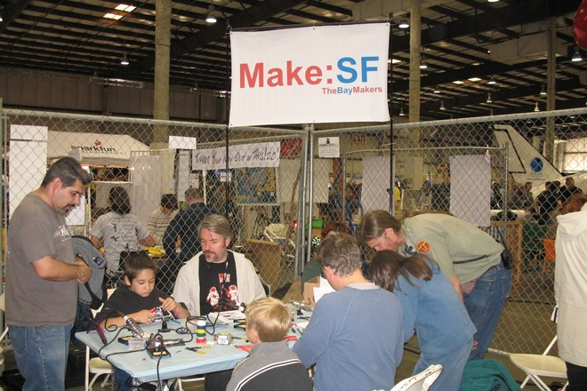
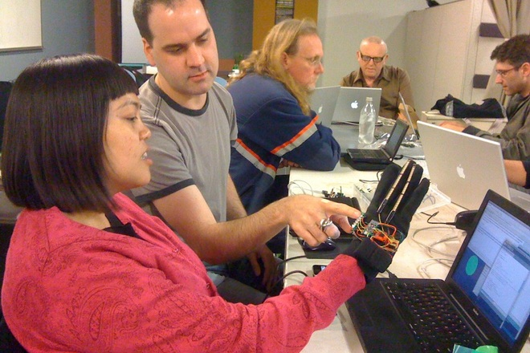
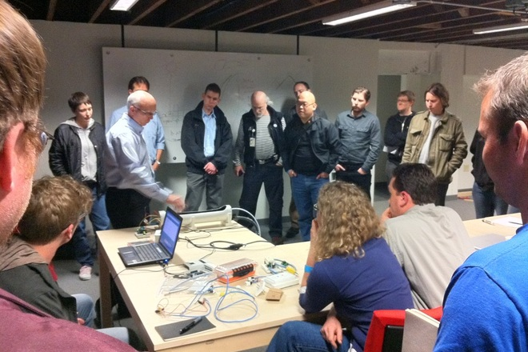

Coolaboratory is Andrew G. Milmoe’s independent practice: user experience design, physical AI, frontier AI model training, and support for the maker community.
Coolaboratory started in the Oakland Bay Area: information architecture and user experience design for global brands, by way of local digital agencies.
That same discipline carried it to Chicago: user experience design and physical AI for hardware startups. Industrial IoT for high-stakes physical environments, built for the people running the machines as much as the ones reading the numbers in the boardroom: heavy operational data made into something a frontline worker can actually use.
A Bay Area maker community, founded by Andrew in November 2007. Over the next decade it grew to 3,000 active members and produced more than 200 workshops, all of it hands-on: at the workbench, at Maker Faire, teaching and building alongside people who cared more about figuring it out than showing off. He moved on in May 2018.


